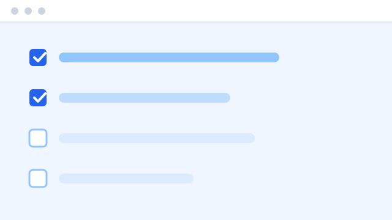
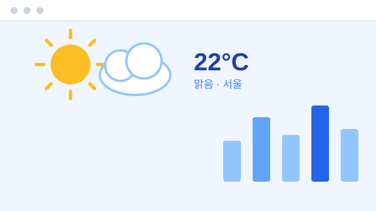

Frontend Developer
사용자 경험을 고민하는 프론트엔드 개발자입니다. HTML, CSS, JavaScript를 기반으로 빠르고 접근성 높은 웹 서비스를 만듭니다.
Open to work
3년차 프론트엔드 개발자
3년차 프론트엔드 개발자로, 사용자 친화적인 인터페이스 설계와 성능 최적화에 관심이 많습니다. 팀원들과의 원활한 협업을 중요하게 생각하며, 새로운 기술을 학습하고 실무에 적용하는 것을 즐깁니다.
30%
페이지 로딩 속도 개선

Vanilla JS로 만든 To-do 리스트 웹앱. 로컬 스토리지 기반 데이터 저장.
HTML · CSS · JavaScript

공공 API를 활용한 실시간 날씨 조회 서비스.
HTML · Tailwind CSS · JavaScript
언제든 편하게 연락 주세요.